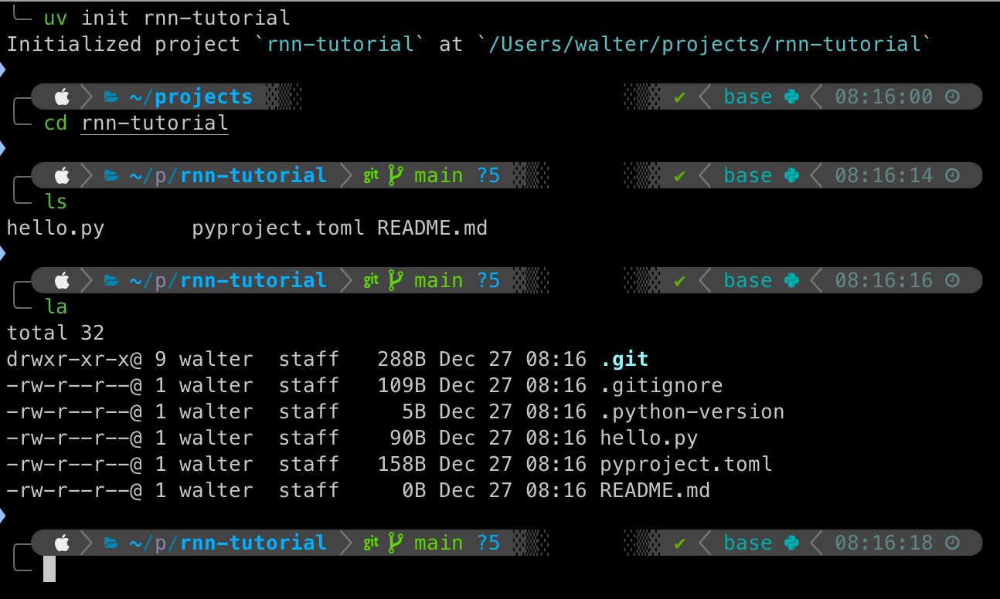
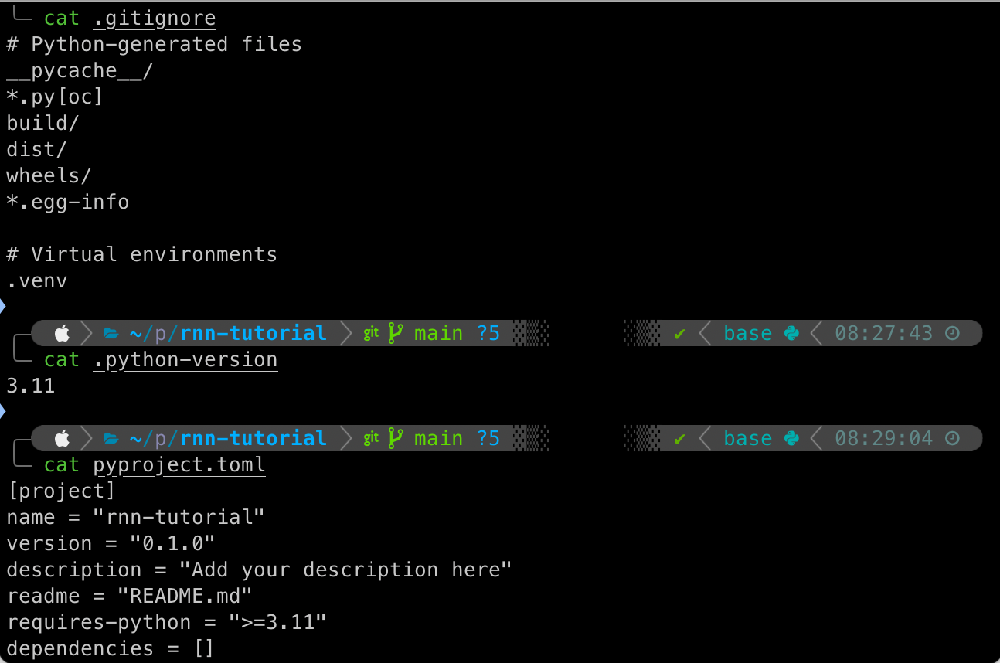

Let’s dive into uv by creating a new project. Projects are a way to manage your package dependencies for a coding project. We’ll start by installing the dependencies for the first radiology-oriented natural language processing (NLP) tutorial I presented in the RSNA Deep Learning Lab at the 2021 RSNA annual meeting.

uv projectInitializing a uv Project
In the screenshot above, I’ve run the uv init command to initialize a project called “rnn-tutorial”. This command creates a new directory named rnn-tutorial. I then change directory or cd into the new directory and inspect it’s contents. You’ll notice that I’ve run two separate commands to inspect the files. The first command ls lists the contents of the directory. By default, this command excludes dotfiles, which are files named starting with a .. The second command la is an alias to the ls command with the -a flag that lists all files in a directory, including dotfiles.
uv init rnn-tutorial
cd rnn-tutorial
ls
ls -a Run these commands one-by-one in your terminal to follow along.
The first object you see listed in the directory is a subdirectory named .git. This is where all the files git uses for version control will be stored. Any files or patterns listed in the .gitignore file below .git will not be tracked by git. uv generates a default template that excludes files generated by Python (the ones you don’t want to track) and virtual environments of the type .venv, which are not in our project directory yet but will be created shortly.
After those, a .python-verison file is created to specify the Python version used in the project. An example Python script named hello.py is included. A pyproject.toml file is generated that uses the TOML format to list information about the project, including dependencies, in machine-readable format. Finally, a blank README.md file is generated in which you should use Markdown formatting to include human-readable details about your project. If you commit your project to an online repository, such as GitHub or GitLab, then the README will be displayed on the repository page.
Run the cat command followed by the file name in your terminal to inspect the contents of any of these files.

uv Project BoilerplateRunning a Python Script
Let’s run the example Python script hello.py by running the following command in your terminal.
uv run hello.pyThis command will use the default Python interpreter installed on your system to run the script. Since we haven’t yet created a virtual environment for this project, it will also do that and create a uv.lock file.
You should NOT edit the uv.lock file directly. This will be managed by uv and contains precise dependencies for recreating your project on a different machine.
Installing PyTorch and fast.ai with uv and light-the-torch
PyTorch is one of the most utilized software libraries for AI development. It also serves as the backbone for the fastai library. fast.ai is a multi-level framework developed by Jeremy Howard, Sylvain Gugger, and the fast.ai community that allows you to start with high-level commands with strong, empirical default settings that can train a deep learning model in just a few lines of code. As you learn more about fastai, you can progressively go deeper into the mid-level and low-level application programming interfaces (APIs) for more precise control over model development.
The fast.ai book is freely available for download via GitHub and also available in print form. I highly recommend the book and the associated courses (on the fast.ai website) for those who want to learn more about AI and deep learning.
We will first install PyTorch with a lightweight “wrapper” for pip called light-the-torch that simplifies the process of installing PyTorch and its dependencies to leverage the computing resources on your specific machine. You can read the documentation (or docs) for ltt here: ltt docs.
We’ll start by adding ltt to our project, then run uv sync to update our venv before using uv run to install PyTorch with ltt.
uv add light-the-torch
uv sync
uv run ltt install torchAt the end of the output from the last command, you should see the successful installation of a number of packages, including a version of PyTorch, e.g. torch-2.9.1. Make a note of that version, then run the following command to ensure torch is added as a dependency to your project.
# Replace the version number below with the version installed on your system
uv add "torch>=2.9.1"And, finally, we can now add fastai to our project.
uv add fastaiTo test that both the PyTorch and fast.ai libraries are properly installed on your system, create a new file in your project folder and copy-paste the following code into it. Assuming you have the VS Code editor installed, you can run the following command to open your project folder in Code: code .. Then create a new file called test.py, paste in the code, and save the file.
def main():
try:
import torch
print(f"PyTorch is installed: {torch.__version__}")
print(f"MPS available: {torch.backends.mps.is_available()}")
except ModuleNotFoundError:
print("PyTorch is NOT installed")
try:
import fastai
print(f"fastai is installed: {fastai.__version__}")
except ModuleNotFoundError:
print("fastai is NOT installed")
if __name__ == "__main__":
main()Now, go back to your terminal (or open on in Code) and run the script with uv run. If you don’t get any errors and the package versions print out, then everything was successful!
Apple Metal Performance Shaders (MPS) is a backend for PyTorch available on Macs with an M-series GPU. If the check in the file above prints out “False”, then it’s likely that you have an older Mac and will only be able to utilize the CPU.